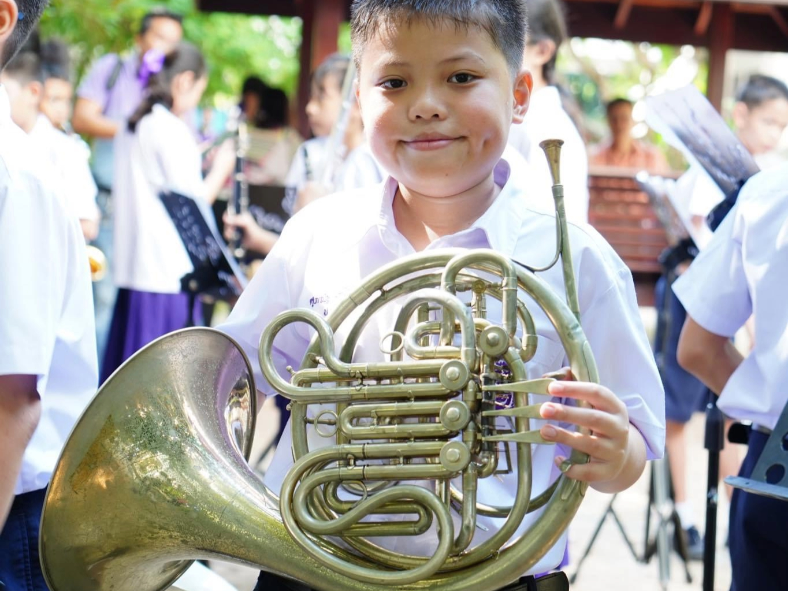
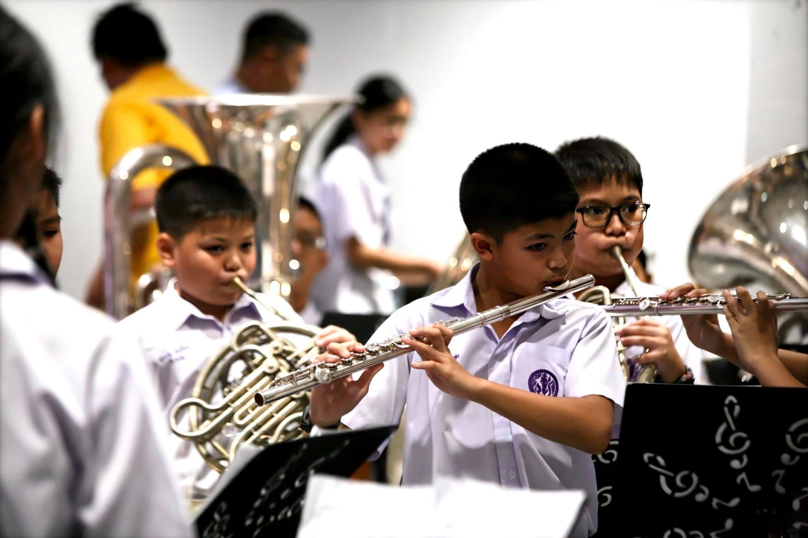
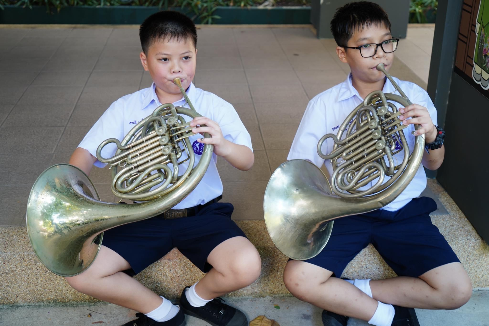

Autobiography
Early life
My name is Sydney, and I was born in the bustling city of Bangkok. Growing up in a household where both my parents were engineers, I was exposed to the world of problem-solving and innovation from a very young age. I remember vividly watching my mother, a brilliant professor, patiently guiding university students through complex engineering concepts. It was during these early years that I developed a deep fascination with the intricacies of structures and mechanics. As a child, I spent countless hours dismantling toys, analyzing their components, and trying to reassemble them in new and creative ways. This innate curiosity and passion for understanding how things work would eventually lead me on a path towards a career in engineering
Adolescence
My middle school years at Satitkaset were a time of exciting discovery and personal growth. It was during this period that I discovered my passion for music and began learning to play the piano. Joining the school's KUS Symphonic band was a highlight of my adolescence. The countless hours spent jamming with my friends in the garage were filled with laughter, camaraderie, and a shared love for music. Those unforgettable experiences helped shape who I am today.



High School
High school was a total rollercoaster, especially after coming back from the whole COVID-19 thing. It was tough to get back into the swing of things, but I eventually got used to it. Academics were pretty intense, and I even bombed a chemistry test. But hey, you learn from your mistakes, right? I worked my butt off to get back on track and ended up acing my physics exam. It taught me that you can overcome anything if you don't give up.
Current Life
As I navigate the latter part of high school, I am more focused on my future. College applications are around the corner, and I am aiming to pursue a degree in Computer Science and Engineering. Outside of school, I love hanging out with my friends and sometimes spending time alone. Every day brings new adventures, and I can't wait to see what the future holds.